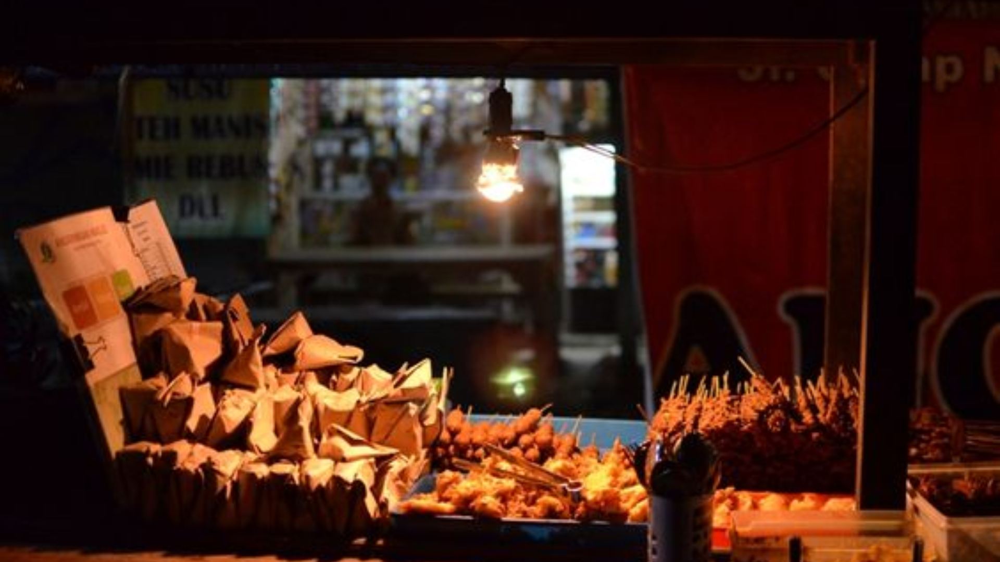

Top Rated Location for Culinary Destinantion
20 Destinasi Wisata Kuliner di Indonesia

Hingga saat ini, kuliner masih menjadi salah satu ikon wisata yang dapat menarik banyak wisatawan dalam dan luar negeri. Kuliner khas Indonesia disukai karena bervariasi, memiliki cita rasa otentik, dan tentu saja enak.
Nah, berikut ini adalah rekomendasi 20 destinasi wisata kuliner di Indonesia menurut Kementerian Pariwisata dan Ekonomi Kreatif (2021):
Jalan Sabang, Jakarta
Salah satu wisata kuliner ikonik di Jakarta yang menawarkan beragam kuliner legendaris. Salah satunya adalah Sate Jaya Agung sejak 1975. Kemudian ada Ben Seafood, Bakmi Roxy, dan berbagai kudapan nikmat lainnya. Rimba Jaya menyajikan beragam santapan khas Bintan dan Tanjung Pinang. Harga yang ditawarkan pun sangat aman di kantong, bahkan ketika Anda ingin berpesta seafood sekalipun.
Pecenongan, Jakarta
Salah satu destinasi wisata kuliner legendaris di Jakarta sejak 1970-an. Berbagai macam kuliner lezat dan legendaris bisa kita dapatkan di sini. Seperti Bubur Kwang Tung yang menawarkan bubur kepiting dan ayam Hainan, Martabak Pecenongan, dan olahan seafood yang menggugah selera.
Pasar Lama Tangerang
Tidak jauh dari ibu kota ada destinasi wisata kuliner Pasar Lama Tangerang. Beberapa varian makanan yang ada di sini adalah ketoprak, bakso, nasi goreng, sempol ayam, dan laksa. Selain itu, ada banyak minuman menyegarkan, seperti susu kedelai, kacang hijau, hingga es alpukat kocok.
Gang Selot, Bogor
Berlokasi di Jalan Ir H Juanda, Gang Selot menjadi salah satu destinasi wisata kuliner di Bogor sejak 1974. Kuliner yang ditawarkan sangat beragam, mulai dari soto mi, doclang khas Bogor, bakso, hingga batagor. Gang Selot juga menawarkan minuman segar, seperti es pala, es podeng, dan es doger.
Suryakencana, Bogor
Ikon wisata kuliner legendaris di Bogor ini terletak di Jalan Suryakencana. Salah satu yang legendaris adalah Lumpia Basah yang ada sejak 1972. Kemudian laksa Bogor dengan cita rasa 13 jenis rempah, dan berbagai kuliner nusantara lainnya, seperti martabak arang, asinan, roti jadul, hingga bir kotjok.

Kawasan Pantai Padang
Ada banyak kuliner legendaris khas Padang yang bisa dicicipi, seperti pisang kapik yang dibakar di atas bara. Untuk menambah cita rasa, biasanya akan taburi parutan kelapa dan gula merah cair. Lalu ada karupuak leak, yang biasanya dihidangkan dengan kuah sate dengan topping bihun di atasnya.
Rimba Jaya & Melayu Square Tanjung Pinang
Jika berwisata ke Pulau Bintan, khususnya ke Kota Tanjung Pinang, Melayu Square dan Rimba Jaya Night Market dapat menjadi pilihan untuk wisata kuliner. Ratusan pedagang memadati pusat kuliner Melayu Square dan pasar malam Rimba Jaya setiap harinya, dari sore hingga tengah malam. Aneka ragam sajian khas Tanjung Pinang dan Pulau Bintan, dapat dinikmati dikedua pusat kuliner tersebut.
Gang Lombok, Semarang
Berlokasi di dekat Klenteng Tay Kak Sie, Gang Lombok menjadi salah satu destinasi wisata kuliner populer di Semarang. Beberapa yang harus dicicipi adalah wedang tahu dan lumpia legendaris, Lumpia Gang Lombok. Selain itu ada kuliner segar Aneka Es Gang Lombok yang sudah ada sejak 1947.
Simpang Lima, Semarang
Tidak ketinggalan, wisata kuliner di Simpang Lima, Semarang. Banyak pilihan kuliner di sini, seperti Nasi Ayam Bu Sami dan Tahu Petis Prasojo khas Semarang. Selain itu yang cukup terkenal adalah kedai seafood Pak Jari, nasi pecel, dan nasi goreng babat.

Jalan Cibadak, Bandung
Ada banyak berbagai macam kuliner yang menggiurkan di Jalan Cibadak. Mulai dari soto khas Bandung dari kedai Soto Ojo Lali, bakso ikan goreng yang nikmat, hingga bakso tahu dan siomay yang lezat. Apabila ingin yang hangat, Ronde Jahe Alkateri yang sudah berdiri sejak 1980-an bisa jadi pilihan.
Braga, Bandung
Salah satu yang direkomendasikan untuk dikunjungi adalah Restoran Braga Permai, yang memiliki nuansa klasik khas kolonial. Berdiri sejak 1923, pengunjung dapat menikmati berbagai macam patisserie, dan es krim yang lezat.
Galabo, Solo
Tempat wisata kuliner ini terletak di Jalan Mayor Sunaryo, Solo. Diresmikan sejak 2008, wisata kuliner Galabo menjual berbagai hidangan legendaris, seperti Sate Kere Yu Rebi, Tengkleng Klewer Bu Ediyem, hingga Rawon Penjara.
Kampung Wijilan, Yogyakarta
Salah satu sentra gudeg di Yogyakarta yang kerap menjadi incaran wisatawan. Ada banyak kuliner gudeg legendaris khas Yogyakarta yang bisa dicicipi, seperti Gudeg Yu Djum, Bu Slamet, hingga Bu Lies. Selain makan di tempat, gudeg khas Yogyakarta juga bisa dijadikan oleh-oleh.
Pasar Beringharjo, Yogyakarta
Banyak kuliner murah di kawasan Malioboro dan Pasar Beringharjo seperti Pecel Senggol Beringharjo di dekat pintu masuk Pasar Beringharjo dan Gado-Gado Bu Hadi yang ada di lantai dua Pasar Beringharjo. Di sekitar Pasar Beringharjo ada pula jajanan Lumpia Samijaya yang tak kalah nikmat.

Alun-Alun Yogyakarta
Beberapa kuliner menarik yang ada di alun-alun Yogyakarta, seperti Soto Lenthok Pak Man dengan perkedel ketelanya yang khas. Lalu ada pula camilan populernya Cilok Gajahan yang dibuat dengan dari daging sapi yang lembut.
Kawasan Kuliner Jimbaran, Bali
Daerah wisata Jimbaran merupakan salah satu destinasi favorit wisatawan di Pulau Bali. Selain memiliki Taman Budaya Garuda Wisnu Kencana dan juga Dreamland, Jimbaran menawarkan banyak tempat untuk wisata kuliner yang menyajikan kelezatan hidangan laut. Salah satu pusat wisata kuliner di sepanjang Pantai Jimbaran, tiga di antaranya adalah Menega Cafe, Bela Seafood, dan Nelayan Reataurant.
Kya-Kya, Surabaya
Memiliki nuansa pecinan, ada banyak kuliner dengan perpaduan cita rasa Surabaya dengan makanan khas Tionghoa. Mulai dari kedai Bakwan Pak Di yang menjual bakso khas Surabaya, sate gule kambing, hingga berbagai macam olahan lainnya. Nah, salah satu penganan unik dari tempat ini adalah pia di Toko Pia Kemenangan.
Alun-Alun Malang
Kuliner pertama yang wajib dikunjungi adalah Toko Oen, berdiri sejak tahun 1930-an toko ini menawarkan es krim jadul yang segar dan nikmat. Kemudian Depot Hok Lay yang berdiri sejak 1946, dan menawarkan kesegaran susu sapi murni yang dikemas dalam botol kaca.
Alun-Alun Batu
Satu yang paling terkenal di Kota Batu adalah Pos Ketan Legenda 1967. Selain itu ada Lok-lok Satay yang terbuat dari seafood, dengan berbagai pilihan saus: saus tomat, sambal, mayonaise, barbeque, dan saus spesial menciptakan rasa yang lezat.
Pantai Losari, Makassar
Pisang epe menjadi salah satu kuliner khas di pantai Losari. Pisang epe terbuat dari pisang kepok yang dibakar, lalu disiram gula merah di atasnya. Tak ketinggalan banyak pula penjaja coto Makassar asli yang memadukan ketupat, jeroan sapi, dan kaldu yang lembut dengan cita rasa otentik.